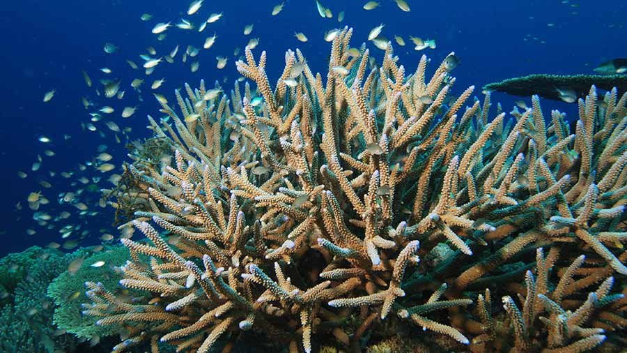

Staghorn coral (*Acropora cervicornis*) is a fast-growing reef-building coral found in shallow tropical waters of the Caribbean and western Atlantic. It has thin, cylindrical branches resembling deer antlers, providing critical habitat for marine species. This coral thrives in clear, warm waters but is highly sensitive to threats such as coral bleaching, disease, pollution, and physical damage. Due to significant population declines, staghorn coral is classified as critically endangered, emphasizing the need for conservation efforts to protect and restore its populations.
STAGHORN-CORAL
